Ejercicios con los resultados (parte I)
En la BD factura, conectando como usuario factura_alu:
Ex_1 Sacar toda la información de los pueblos.
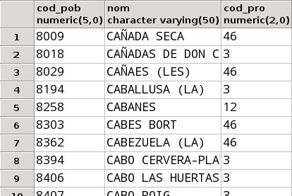
Un total de 1663 filas
Ex_2 Sacar el código postal, el nombre y la dirección, por este orden, de todos los vendedores..
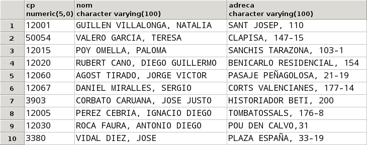
Ex_3 Sacar el código de artículo, la descripción, precio y precio incrementado en un 5% de todos los artículos.
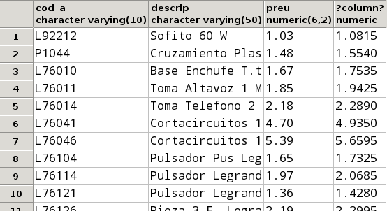
Un total de 812 filas
Ex_4 Sacar la información de los clientes con el siguiente formato (debe ir todo en una columna):
Damborenea Corbato, Alicia. CALLE MADRID, 83 (12425)
Fíjese que está todo en una columna, y por tanto tendrá que concatenar de la forma adecuada. Fíjese también que en en el nombre sólo las iniciales están en mayúsculas
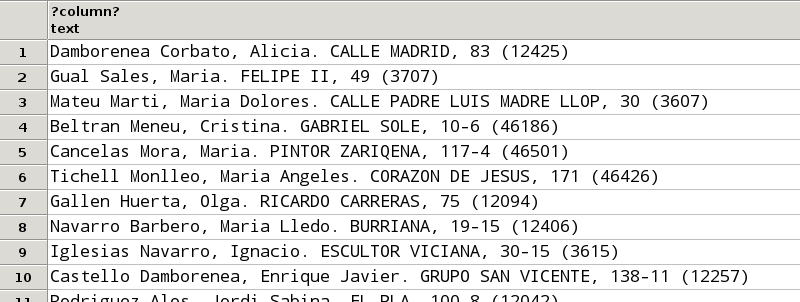
Un total de 49 filas
Ex_5 Sacar el num_f, fecha y cod_ven de las facturas con las siguientes cabeceras respectivamente: Número Factura , fecha y Código Vendedor.
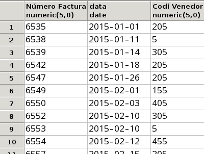
Un total de 105 filas
Ex_6 Dar alias a los campos que lo necesitan de la tabla ARTÍCULO.
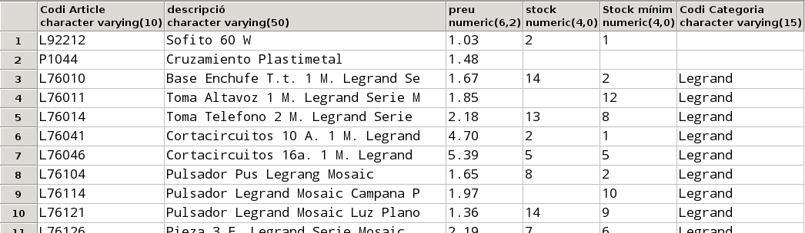
Un total de 812 filas
Ex_7 Sacar los clientes de la ciudad con código 12309.
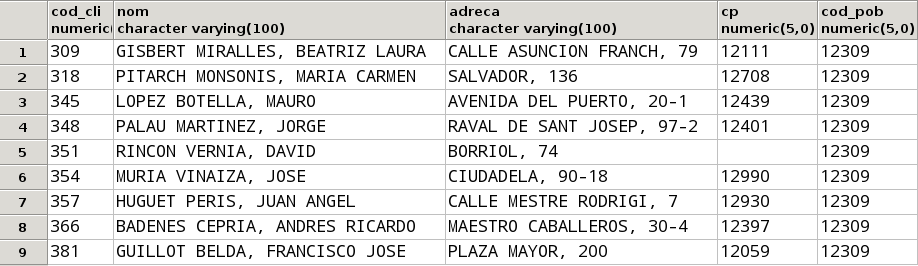
Ex_8 Sacar todas las facturas del mes de marzo de 2015.
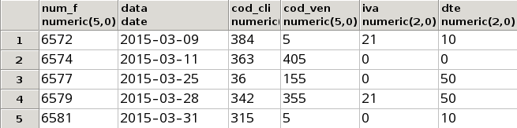
Ex_9 Sacar todos los artículos de la categoría BjcOlimpia con un stock entre2 y 7 unidades.
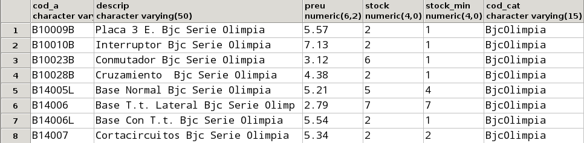
Ex_10 Sacar todos los clientes que no tienen introducido el código
postal.
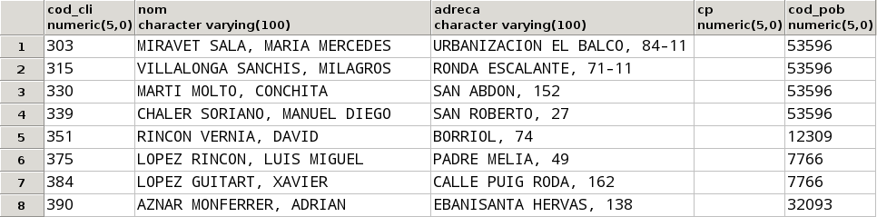
Ex_11 Sacar todos los artículos con el stock introducido pero que no tienen introducido el stock mínimo.
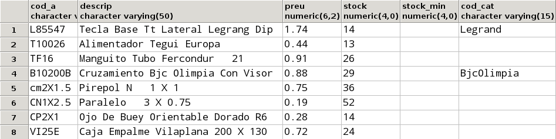
Ex_12 Sacar todos los clientes , cuyoprimer apellido es VILLALONGA.
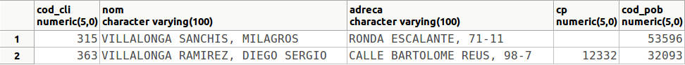
Ex_13.a Modificar lo anterior para sacar todos los que son VILLALONGA de primer o de segundo apellido.
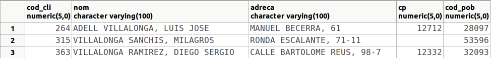
Ex_13.b Modificar lo anterior para sacar todos los que no son VILLALONGA ni de primer ni de segundo apellido.
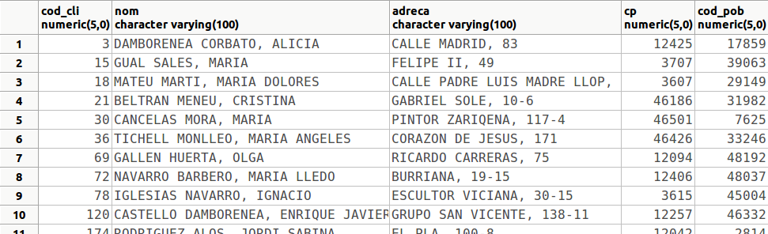
Un total de 46 filas
Ex_14 Sacar los artículos "Pulsador " (la descripción contiene esta
palabra), cuyo precio oscila entre2 y 4 € y de los que tenemos un
stock estrictamente mayor que el stock mínimo.
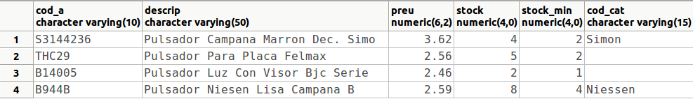
Ex_15 Contar el número de clientes que tienen el código postal nulo.
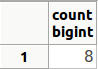
Ex_16 Contar el número de veces que el artículo L76104 entra en las líneas de factura, y el número total de unidades vendidas de este artículo. Sólo le hace falta la tabla LINIA_FAC.
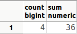
Ex_17 Sacar la media del stock de los artículos.
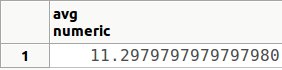
Ex_18 Modificar lo anterior paratener en cuenta los valores nulos, como si fueron 0. Le vendrá bien la función COALESCE que convierte los nulos del primer parámetro al valor dado como segundo parámetro (si es distinto de nulo, deja igual el valor). Por tanto debe utilizarlo de esta manera: COALESCE(stock,0)
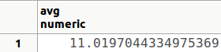
Ex_19 Contar cuántas facturas tiene el cliente 375
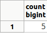
Ex_20 Calcular el descuento máximo , el mínimo y el descuento medio de las facturas.
SELECT nombre_c, provincia
FROM COMARCAS
INTERSECT
SELECT nombre, provincia
FROM COMARCAS INNER JOIN POBLACIONES USING (nombre_c)
ORDER BY nombre_c;
Ex_21 Contar el número de pueblos de cada provincia (es suficiente con sacar el código de la provincia y el número de pueblos).
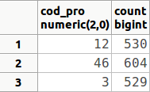
Ex_22 Contar el número de clientes en cada pueblo y código postal.
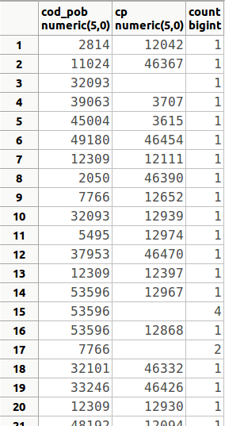
Un total de 45 filas
Ex_23 Contar el número de facturas de cada vendedor a cada cliente.
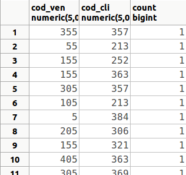
Un total de 96 filas
De estas 96 filas, relativamente poco tienen un valor diferente de 1 en el número de facturas: la fila 29 (455, 30, 2) o la fila 34 (5, 342, 3)
Ex_24 Contar el número de facturas de cada trimestre. Para poder sacar el trimestre y agrupar por él (vale el número de trimestre, que va del 1 al 4), podemos utilizar la función TO_CHAR(fecha,'Q').
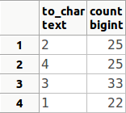
No aparece ordenado, y significa que en el trimestre 2 hay 25 facturas, en el trimestre 4 hay 25, en el trimestre 3 hay 33 y en el trimestre 1 hay 22
Ex_25 Calcular cuántas veces se ha vendido un artículo, la suma de unidades vendidas, la cantidad máxima y la cantidad mínima.
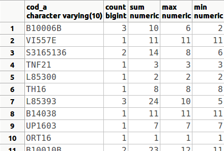
Un total de 399 filas
Ex_26 Contar el número de artículos de cada categoría y el precio medio.
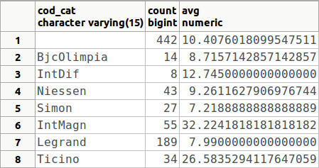
Ex_27 Calcular el total de cada factura, sin aplicar descuentos ni IVA. Sólo nos hará falta la mesa LINIES_FAC , y consistirá en agrupar por cada num_f para calcular la suma del precio multiplicado por la cantidad.
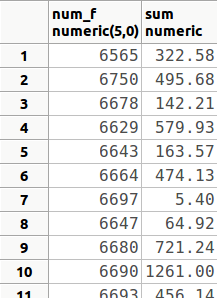
Un total de 105 filas
Ex_28 Calcular la media de cantidades pedidas de aquellos artículos que se han pedido más de dos veces. Observe que la mesa que nos hace falta es LÍNEA_FAC, y que la condición (en el HAVING) es sobre el número de veces que entra el artículo en una línea de factura, pero el resultado que debe mostrarse es la media de la cantidad.
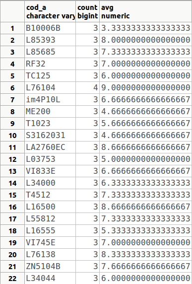
Ex_29 Sacar a los pueblos que tienen entre 3 y 7 clientes. Quitar sólo el código del pueblo y ese número
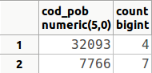
Ex_30 Sacar las categorías que tienen más de un artículo "caro" (de más de 100 €). Observe que también nos saldrá la categoría NULL, es decir, aparecerá como categoría aquellos artículos que no están catalogados.
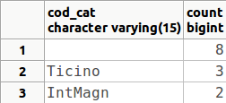
Ex_31 Sacar a los clientes que tienen más de una factura, con el número de facturas.
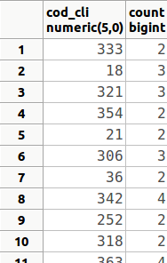
Un total de 33 filas
Ex_32 Modificar lo anterior para sacar a los clientes que tienen más de una factura en el primer trimestre.
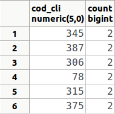
Ex_33 Calcular el total de cada factura de aquellas facturas que tienen 10 o más líneas de factura, sin aplicar descuentos ni IVA (como la consulta Ex_26), y también aplicando el descuento que consta en la línea de factura (no el descuento de toda la factura). Tendremos el problema de que el valor NULL es especial, y al operar con cualquier otro valor dará NULL. En este caso claramente debemos considerarlo como un descuento 0. Puede utilizar una función que sustituye a los valores nulos encontrados en el primer parámetro, por segundo parámetro de esta forma: COALESCE(dto,0)
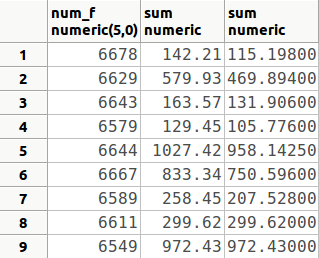
Ex_34 Sacar a todos los clientes ordenados por código de población, y dentro de éstos por código postal.
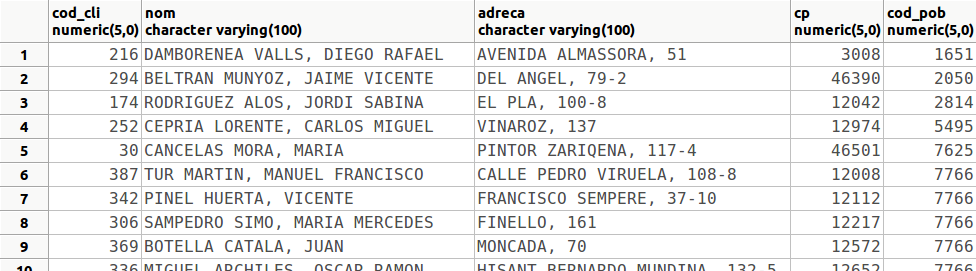
Un total de 49 filas
Ex_35 Sacar todos los artículos ordenados por la categoría, dentro de éste por stock, y dentro de éste por precio (de forma descendente)
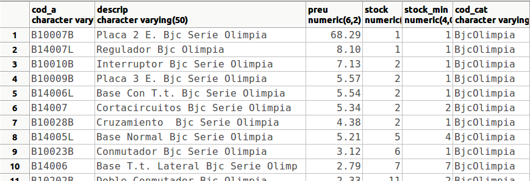
Un total de 812 filas
Ex_36 Sacar los resultados de la consulta 6.33 ordenados por el total de la factura cuando ya se ha aplicado el descuento, de forma descendente.
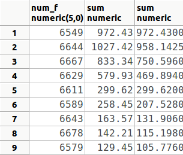
Ex_37 Sacar todos los artículos ordenados por la diferencia entre el stock y el stock mínimo de forma descendente. Debido a que en muchas ocasiones el stock o el stock mínimo es nulo, debemos considerar en estos casos como 0. Por tanto debemos volver a utilizar la función COALESCE(stock,0) (y también para el stock mínimo).
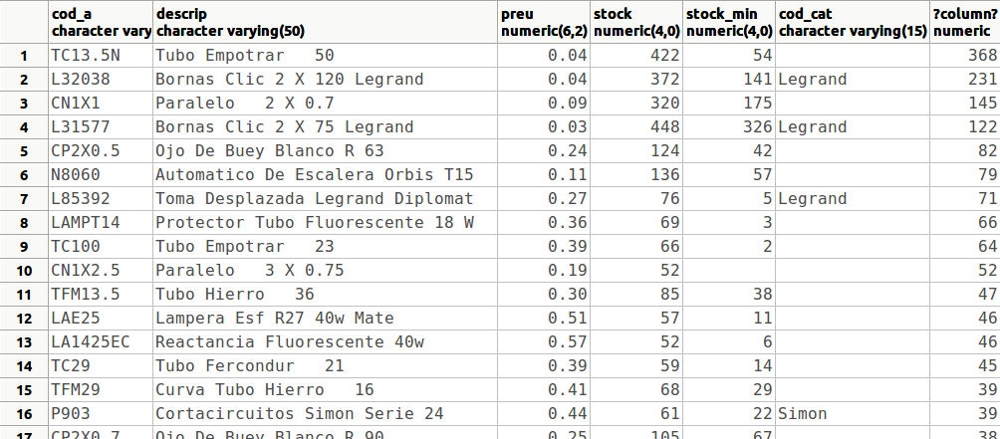
Un total de 812 filas
Ex_38 Sacar los códigos de vendedor con el número de facturas vendidas en el segundo semestre de 2015, ordenadas por este número de forma descendente
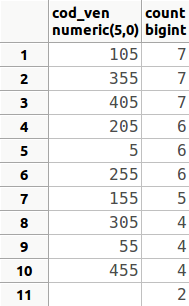
Ex_39 Sacar a los vendedores que han vendido algo en el mes de enero de 2015.
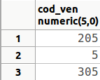
Ex_40 Sacar los diferentes tipos de IVA que se han aplicado a las facturas de cada vendedor, también durante el mes de enero de 2015
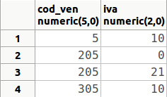
Ex_41 Sacar los diferentes jefes de vendedores (evite que aparezca el valor nulo)
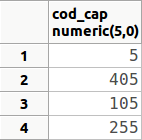
Ex_42 Sacar los diferentes descuentos que se han aplicado en los artículos, el código de los que comienza por SAT. Sacar tanto el código de artículo como el descuento.
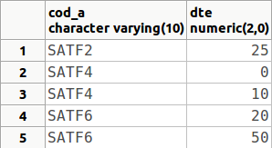
Ex_43 Contar en cuántas poblaciones tenemos clientes
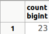
Ex_44 Sacar toda la información de los dos artículos más caros.
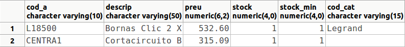
Ex_45 Sacar el código de las tres ciudades con más clientes
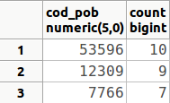
Ex_46 Sacar al vendedor que ha vendido menos facturas
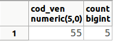
Ex_47 Sacar las tres facturas más caras (sin contar los descuentos)
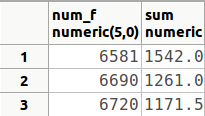
Ex_48 Modificar lo anterior para sacar todas las facturas, excepto las 3 más caras.
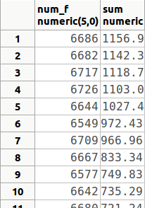
Un total de 102 filas
Ex_49 Crear una tabla llamada ARTÍCULO_999x , donde 999 deben ser las 3 últimas cifras del DNI, y x la letra de tu NIF, que sea una copia de la tabla ARTÍCULO, pero sustituyendo los valores nulos de stock y stock_min por ceros.
El resultado debe ser la creación de la mesa. Si consulta su contenido debe de ser el siguiente:
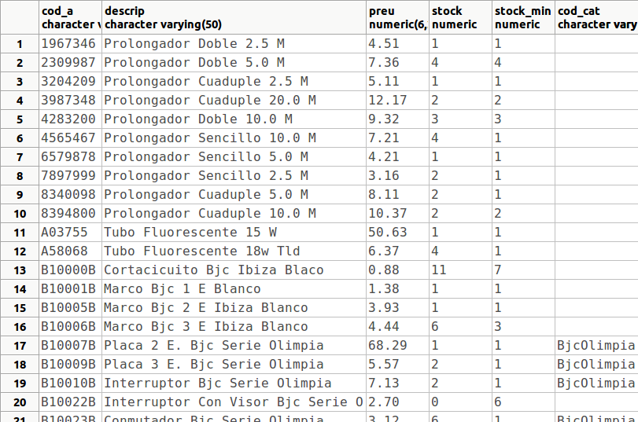
Un total de 812 filas
Ex_50 Utilizar la tabla anterior para sacar el stock máximo, el mínimo y la media de stocks. Observa que si utilizamos la tabla ARTÍCULO, los resultados no serían los mismos (excepto el máximo), sobre todo la media, ya que los valores nulos no entrarían en los cálculos de esa media.
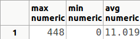
Licenciado bajo la Licencia Creative Commons Reconocimiento NoComercial CompartirIgual 3.0